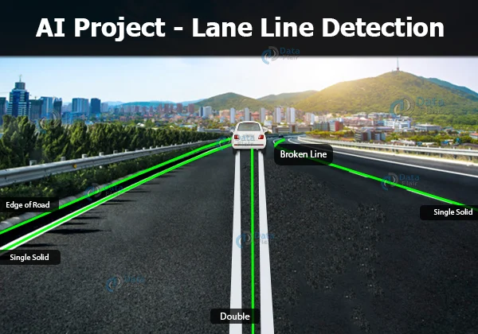

I am full stack web developer based in Melburne,Australia
___________________________________________
Here's what I've done so far
Handwritten Digits
Digits written by humans vary a lot in curves and sizes as they are hand-drawn and everyone's writing is not the same.It is a great way to start artificial intelligence by building a handwritten digits recognition system that can identify the digit drawn by humans.
Lane Line Detection
AI Project Idea – Lane line detection technique is used in many self-driving autonomous vehicles as well as line-following robots. We can use computer vision techniques such as color thresholding to detect the lanes.
___________________________________________
My photos